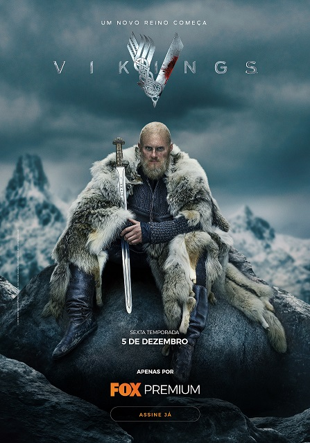
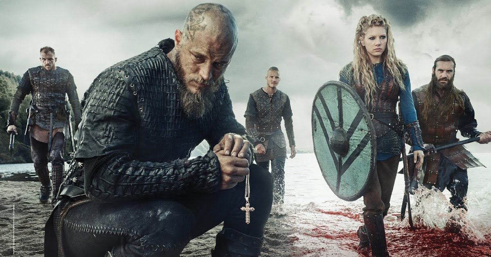

Vikings
Curiosidades
-
A princípio, o History Channel encomendou “Vikings” como uma minissérie de nove episódios. No entanto, a grande recepção do público fez com que eles decidissem avançar, já que a história criada por Michael Hirst tinha muito a dizer.
-
Embora a série seja originalmente transmitida pelo History Channel dos Estados Unidos, é uma co-produção entre a Shaw Media, Octagon Films, Take 5 Productions e MGM Television, da Irlanda e do Canadá.
-
Podemos nos perguntar se realmente existe rigor histórico na série e a resposta é: em partes. Deve-se notar que estamos falando sobre a Idade Média e que os Vikings não escreveram sua história, então não há testemunhos irrefutáveis de sua passagem pelo mundo. No entanto, a série em si é baseada em pesquisas históricas e tem um consultor histórico especialista na Alta Idade Média. Portanto, a produção é uma mistura de história e ficção.
-
Quase todas as séries seguem a mesma fórmula na hierarquia na equipe criativa: existe um “showrunner”- que é o criador líder da série – e os episódios são escritos por outros roteiristas, às vezes uma equipe fixa e outras em constante mudança. Esta regra não se aplica a “Vikings”: todos os episódios foram escritos pela mesma pessoa, Michael Hirst.
Elenco

-
Katheryn Winnick - Lagertha
-
Alexander Ludwing - Bjorn
-
Alex Hogh Andersen - Ivar
-
Travis Fimmel - Ragnar
-
Gustaf Skarsgård - Floki
-
George Blagden - Athelstan
-
Jordan Patrick Smith- Ubbe
-
Marco Ilsø - Hvitserk
-
Alyssa Sutherland- Auslaug